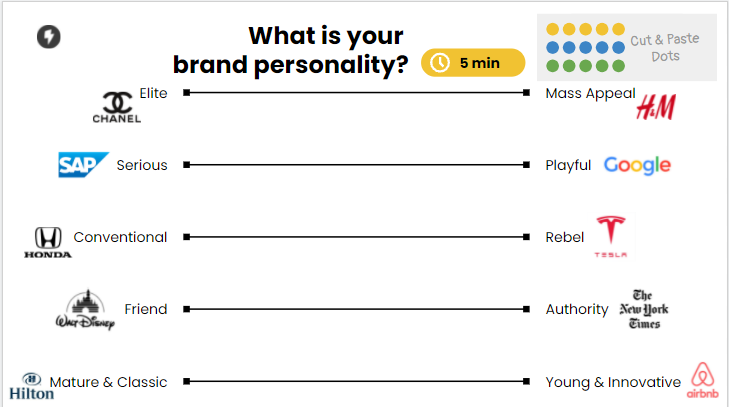

Personal
Name? Age? Educational?
location?
Write here
¡Hola soy David Angulo!
Tengo 22 años.
Vivo en el
estado de Campeche, Campeche.
Estudio la Licenciatura en Ingeniería
en Sistemas Computacionales en la
Facultad
de Ingeniería de la Universidad Autónoma de Campeche.
Goals & Motivation
What do they want to archieve?
What gives them energy? what holds them back?
what keeps them up at right?
Write here
Quiero terminar la universidad.
Mi familia, me da el apoyo para seguir adelante.
Aprobar y esperar el tiempo para pasar cada materia.
Mi padre, el ver feliz a mi padre de que termine la carrera
A Day in the Life of...
What makes a successeful day?
which persons and things do they interact with?
What makes them feel satisfied?
What gets them frustated?
Write here
Estar en todas mis clases
Con mi familia en la casa, mis amigos y mis maestros.
Poder hacer las cosas a tiempo me hace sentir satisfecho.
No poder entregar las tareas o no hacer las cosas a tiempo.

Soy más de Mass Appeal
soy más de Playful
Soy más convencional
Soy más Friend
Soy más Mature & Classic